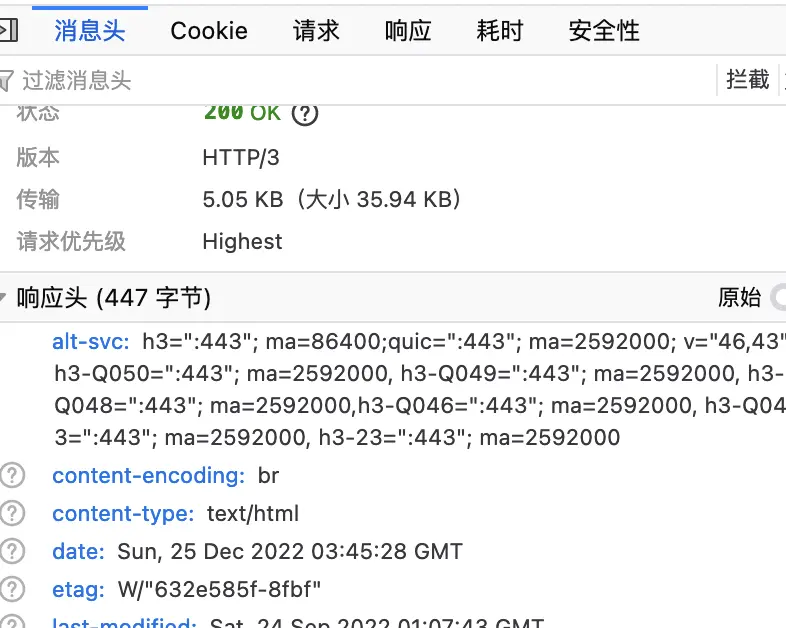

常用技巧
AI 导读一分钟导读，先掌握全文主干。
核心观点
- rewrite 两种写法：$server_name 由 nginx 配置决定，$host 由请求路径决定
- 覆盖常用模块、正向代理配置片段与常见问题
- 2026 更新：HTTP/3+HTTP/2 双监听（纠正版）、1.29-1.31 新能力与安全线提醒
关键结论与取舍
- 按部署场景选 rewrite 变量，避免多域名时跳错
- 2026 安全线集中于 1.31.x 修复，升级别拖
配置片段
-
http 跳转 https
rewrite ^(.*) https://$server_name$1 permanent; rewrite ^(.*) https://$host$1 permanent;- 两种写法，各有适合的场合
- $server_name，由 nginx 配置决定
- $host，由请求路径决定
-
正向代理
server { listen 80; location / { proxy_pass http://$host$request_uri; } }- 配合日志，可以用来调试
- 可以过滤掉特定请求
- 可以检查 http 请求是否被拦截
-
解决无法加载样式表
# 否则无法加载样式表 include /etc/nginx/mime.types; default_type application/octet-stream; -
支持 http2
-
自定义安装带上 v2、ssl（2026 注意：openssl@1.1 已于 2023-09 EOL，下面的路径已改为 openssl@3）
./configure --prefix=/Users/Shared/nginx \ --with-http_v2_module \ --with-http_ssl_module \ --with-openssl=/opt/homebrew/opt/openssl@3\ --with-debug -
配置里加上 http2
... server { # 默认情况http2都走ssl,所以在ssl加上http2 listen 443 ssl http2; ... } ...
-
-
支持 http3
-
自定义安装带上 v3、ssl、brotli
# [历史写法]2021-2024 时代的实验方案(LibreSSL+stream_quic_module);2026 官方成熟姿势是 ngx_http_v3_module+OpenSSL 3.x,见文末「Nginx 常用技巧更新」 ./auto/configure --with-http_v3_module \ --with-stream_quic_module \ --with-http_ssl_module \ --with-http_v2_module \ --add-module=../ngx_brotli \ --with-cc-opt="-I../libressl/build/include" \ --with-ld-opt="-L../libressl/build/lib" -
配置里加上 http3
... http { brotli on; brotli_comp_level 6; brotli_types text/plain text/css application/json application/x-javascript text/xml application/xml application/xml+rss text/javascript application/javascript image/svg+xml; server { # 默认情况http2都走ssl,所以在ssl加上http2 listen 443 ssl http2; listen 443 quic reuseport; # UDP listener for QUIC+HTTP/3,在主域名表示reuseport，否则会提示冲突 ssl_protocols TLSv1.3; # QUIC requires TLS 1.3 # 一定要添加头部，否则无法开启 add_header alt-svc 'h3=":443"; ma=86400;quic=":443"; ma=2592000; v="46,43", h3-Q050=":443"; ma=2592000, h3-Q049=":443"; ma=2592000, h3-Q048=":443"; ma=2592000,h3-Q046=":443"; ma=2592000, h3-Q043=":443"; ma=2592000, h3-23=":443"; ma=2592000'; ... } ... } ...
-

-
四层代理——stream
-
自定义安装带上 stream
./configure --prefix=/Users/Shared/nginx \ --with-stream \ --with-debug make && make install -
配置里加上 stream
... stream { server { listen 8411; proxy_timeout 3s; proxy_pass xxx:8411; } } ...
-
-
gzip——压缩支持
... http { # 打开gzip指令，否则后面不会生效 gzip on; # 回包头部增加content-encoding: gzip gzip_vary on; # 压缩类型 gzip_types text/plain text/css application/json application/x-javascript text/xml application/xml application/xml+rss text/javascript application/javascript image/svg+xml; } ... -
location / { #可以多次映像/复制,从而起到放大流量功能 #产生一个http subrequest "/mirror?",跳转到相应location #所以mirror结果(包括超时,服务器关闭,50x,40x等等),不影响这个本身速度及结果 #但是占用内存,消费conn连接池之类还是要的 #mirror /mirror; #mirror /mirror; mirror /mirror; #允许丢掉body #mirror_request_body off; proxy_pass http://backend; } location = /mirror { # 判断请求方法，不是GET返回403,用其他类似手段缩小流量规模 # if ($request_method != GET) { # return 403; # } internal; #这里的回包是忽略 proxy_pass http://test_backend$request_uri; #允许丢掉body #proxy_pass_request_body off; #proxy_set_header Content-Length ""; proxy_set_header X-Original-URI $request_uri; } -
利用日志调试
server { ... #降低错误日志等级,例如notice,如果编译带有--with-debug,则可以debug,debug_http error_log logs/error.log info; #不同路径不同access日志文件,确认哪个loc使用 location /hello { ... access_log logs/hello_access.log; ... } location /world { ... access_log logs/world_access.log; ... } ... } -
root 和 alias 的区别
# 请求/abc/123 ==> /var/www/app/static/abc/123
location /abc {
# In case of the root directive, full path is appended to the root including the location part
# 请求的path附加上root指定path,组合本地路径
root /var/www/app/static;
autoindex off;
}
# 请求/abc/123 ==> /var/www/app/static/123
location /abc {
# only the portion of the path NOT including the location part is appended to the alias.
# 请求的path移除掉location的path,再附加上alias指定path,组合本地路径
alias /var/www/app/static;
autoindex off;
}常用模块
-
http_memcached 模块
... location /memcached { set $memcached_key "$uri"; memcached_pass 127.0.0.1:11211; #指示返回为html,方便浏览器直接显示 default_type text/html; error_page 404 502 504 = @notexit; } location @notexit { #echo为第三方模块引入指令,方便调试 echo "noexit$uri"; } ...
-
ngx_http_redis 第三方模块，类似 http_memcached
./configure --prefix=/Users/Shared/nginx \ --add-module=../nginx-party-module/ngx_http_redis-module \ ... --with-debug make && make install... location /redis { set $redis_key "$uri"; redis_pass 127.0.0.1:6379; #指示返回为html,方便浏览器直接显示 default_type text/html; error_page 404 502 504 = @notexit; } location @notexit { #echo为第三方模块引入指令,方便调试 echo "noexit$uri"; } ...
-
redis2-nginx-module 第三方模块，更强大、操作更多
./configure --prefix=/Users/Shared/nginx \ --add-module=../nginx-party-module/redis2-nginx-module \ --with-debug make make install... location = /foo { set $value '<html><H1>From Nginx Redis</H1></html>'; redis2_query set one $value; redis2_pass 127.0.0.1:6379; } location = /get { redis2_query get one; redis2_pass 127.0.0.1:6379; } ...
常见问题
-
server_names_hash 问题
[emerg] could not build server_names_hash, you should increase server_names_hash_bucket_size: 32 -
解决办法
# 如果不够,继续增加,大小必须是32*n server_names_hash_bucket_size 64; -
invalid request 问题
# access.log 有这种提示 "PRI * HTTP/2.0" 400 157 "-" "-" # error.log 有这种提示 client sent invalid request while reading client request line -
解决办法——客户端没有采用 ssl、tls，但访问 nginx 配置需要 ssl
-
php-fpm 出现 Primary script unknown 问题
-
尝试修改 nginx 配置
# FastCGI sent in stderr: "Primary script unknown" while reading response header from upstream, # fastcgi_param SCRIPT_FILENAME /scripts$fastcgi_script_name; fastcgi_param SCRIPT_FILENAME $document_root$fastcgi_script_name; -
如果仍然不行，就打开 php-fpm.conf 的日志配置
access.log = /var/log/php-fpm.$pool.access.log -
再打开 nginx 日志配置
# http log_format scripts '$document_root$fastcgi_script_name > $request'; # server access_log /usr/local/nginx/scripts.log scripts; -
重启 nginx 和 php-fpm 查看日志，一般是路径不对或权限不对
-
-
php-fpm 出现无法连接数据库，可能是编译参数不对
./configure --enable-fpm --prefix=/usr/local/php --with-mysqli=mysqlnd --with-pdo-mysql=mysqlnd -
不知道当前 nginx 用的是哪个配置文件
# 获取nginx进程号 ps -ef | grep nginx # 获取nginx路径 cd /proc/pid ls -a # 执行相应路径的语法测试,输出就能看到路径 nginx -t -
不知道当前 nginx 的编译参数
# 获取nginx进程号 ps -ef | grep nginx # 获取nginx路径 cd /proc/pid ls -a # 直接看 PATH 里 nginx 的编译参数(-V 打印 configure 参数与模块列表) nginx -V # 机器上有多个 nginx 时,用进程真实二进制查,避免看错对象: # sudo /proc/$(pgrep -x nginx | head -1)/exe -V
Nginx 常用技巧更新（2026）
本节基于 2026-08 现状（mainline 已到 1.31.4、stable 1.30.x）重写旧技巧：先纠正双监听配置里的错误指令，再补充 1.29-1.31 引入的实用新能力。
HTTP/3 + HTTP/2 双监听（纠正版）
旧配置里的 http3 on; 是 不存在的指令 （网上流传很广的误解），启用 HTTP/3 靠 listen 的 quic 参数。而且 1.31.2 修复了 ngx_http_v3_module 的 use-after-free（CVE-2026-42530），生产建议跑在 1.31.x 或对应的 stable：
server {
listen 443 ssl; # TCP：HTTP/1.1 + HTTP/2
listen 443 quic reuseport; # UDP：HTTP/3（无 http3 on 指令）
ssl_protocols TLSv1.2 TLSv1.3;
ssl_early_data on; # 0-RTT，需 OpenSSL 3.5.1+ 或 BoringSSL/QuicTLS
quic_retry on; # 地址验证
add_header Alt-Svc 'h3=":443"; ma=86400'; # 浏览器凭该头上探 h3
}
1.29-1.31 引入的新能力（2026 可用）
近一年 nginx 主线把以往要靠商业版或第三方补丁的能力搬进了开源版，几个高价值点：
| 能力 | 进入版本 | 说明 |
|---|---|---|
| HTTP 正向代理 | 1.31.0（2026-05-13） | 官方主线新增 HTTP forward proxy 支持，网关/内网出口场景不再依赖第三方模块 |
| Upstream 粘滞会话 | mainline 1.29.6，stable 1.30.0（2026-04-14） | upstream 组的粘滞路由（会话保持），此前为商业版能力 |
| HTTP/2 上游 | 1.29.x，stable 1.30.0 | proxy_http_version 2; 让 nginx 以 HTTP/2 访问后端，降低多路复用开销 |
| Encrypted ClientHello | 1.29.x，stable 1.30.0 | ECH 支持，隐藏 SNI 对抗流量检测 |
| Multipath TCP | 1.29.7，stable 1.30.0 | MPTCP 支持，多路径聚合（移动/弱网场景） |
| 默认上游长连接 | 1.29.7 起行为变化 | 默认 proxy HTTP 版本改为 HTTP/1.1 + keep-alive，升级后应留意依赖短连接的旧配置 |
其中「默认 proxy 版本改为 HTTP/1.1 + keep-alive」是升级 mainline / 1.30 后的隐性行为变化 ：老配置如果靠每个请求新建连接做校验，需要显式加 proxy_http_version 1.0; 来维持旧行为。
仍值得保留的经典技巧
# gRPC 反向代理
location /greet.Greeter {
grpc_pass grpc://grpc-backend:50051;
}
# WebSocket 代理
location /ws {
proxy_pass http://backend;
proxy_http_version 1.1;
proxy_set_header Upgrade $http_upgrade;
proxy_set_header Connection "upgrade";
}
# 限流
limit_req_zone $binary_remote_addr zone=api:10m rate=10r/s;
location /api {
limit_req zone=api burst=20 nodelay;
proxy_pass http://backend;
}2026 安全线提醒
2026 上半年 mainline 密集出安全补丁，务必跟进：1.31.2 修 CVE-2026-42055（proxy_v2 / gRPC 头部溢出）、CVE-2026-48142（charset 过读）、CVE-2026-42530（v3 use-after-free）；1.31.3 修 CVE-2026-42533（map 正则溢出）、CVE-2026-61.31.4 、stable 1.30.4。